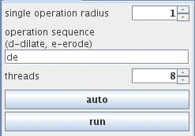

MORPHOLOGICAL OPERATIONS
The module performs morphological operations: dilation - expansion of an object thus potentially filling in small holes and connecting disjoint objects, and erosion - shrinking an object by eroding its boundaries.
Input data
The input field is regular.
Output data
At output there is a regular and its geometry object.
Computation parameters
